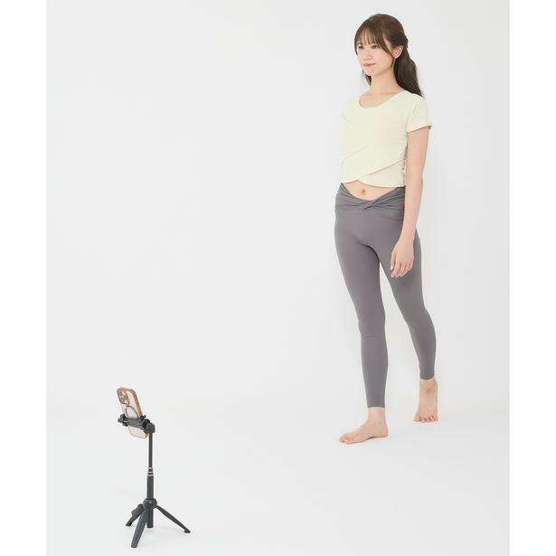
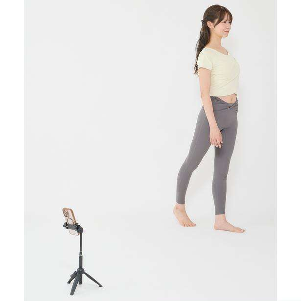
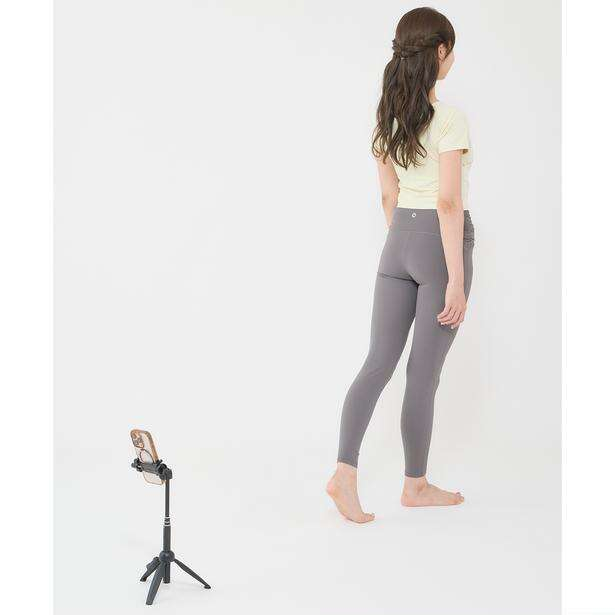
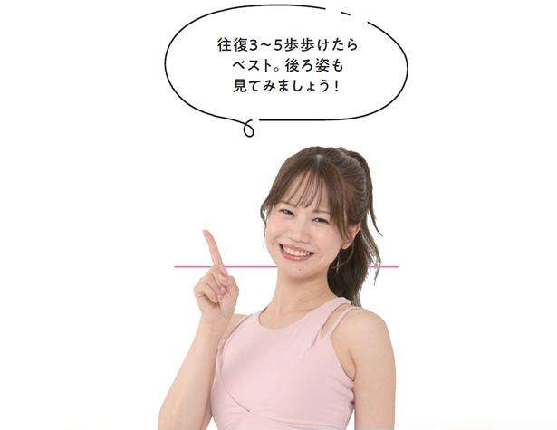
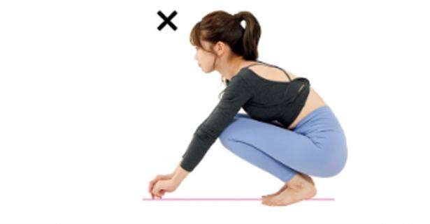
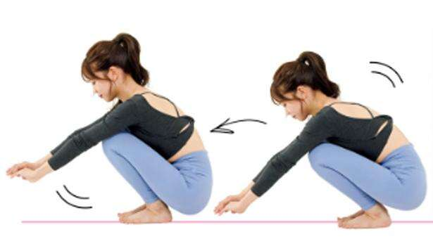

“一种神奇的步行饮食，可以帮助你自动减肥，并让你在余生中不再增加体重。” （Kanape/KADOKAWA）No.4【共7次】
步行教练卡纳佩（Kanape）通过SNS分享正确的步行方法，并以“步行让自己年轻10岁”为座右铭。她的步行前后视频发布在互联网（Instagram）上，引发了诸如“她看起来像老太婆和20多岁的女孩！”等评论，引起了巨大反响，观看次数超过800万次。她的书“一种神奇的步行饮食，可以帮助你自动减肥，并让你在余生中不再增加体重。”（KADOKAWA）是一本充满智慧的书，讲述了如何通过对步行方式做出微小的改变来获得不衰老的身体。为什么不模仿 Kanape 采取更轻松的步骤呢？
*本文摘自 Kanape 的书《神奇的步行饮食，将帮助您自行减肥，并让您终生不再增加体重。》
我们来录制一个如何走路的视频
让我们拍一个视频来客观地看看我们是如何走路的。如果您将智能手机放在地板上并拍照，以便可以看到您的整个身体，尤其是双脚，则更容易理解。最好有一个三脚架，但您也可以将其放在地板上并靠在墙上。



从正面拍摄
检查站
□你的姿势不稳定吗？
□您的骨盆是否明显左右晃动？
□您的脚趾是否向内或打开得太宽？
□你的脚踝摔倒了吗？
从侧面拍摄
检查站
□你能成功落地吗？
（整个脚掌落地不是很稳吗？）
□步幅是否太短？
□您的上身是前倾还是拱背？

检查走路时受伤的部位
根据您走路时身体的哪些部位容易引起疼痛，您可以在某种程度上确定您的“习惯性步行方式”或“不平衡的使用身体的方式”。但是，没有单一的原因；肌肉力量、灵活性、鞋子、原有条件等都会产生影响，因此请仅将此作为指导。
●小腿受伤→脚踝僵硬。你的脚趾抬得太高，或者脚跟重重地落地。
●膝盖受伤 → 膝盖弯曲，行走时会给膝盖施加压力。
●小腿受伤→重心在脚趾上。踮起脚尖走路
●腰部疼痛 → 由于弓背或驼背，腰部受到拉伤。我无法使用臀部肌肉
●前大腿受伤 → 驼背、弯曲膝盖走路时，前大腿会受到压力。
●我踢到了自己的脚踝，很痛 → 我的膝盖向外，脚踝向内。

如果蹲下时脚后跟不能着地，则表明您的脚踝僵硬。

通过蹲下和前后移动时伸展来放松脚踝。